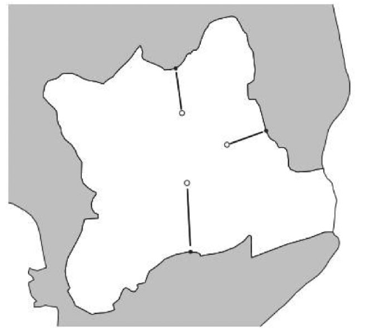
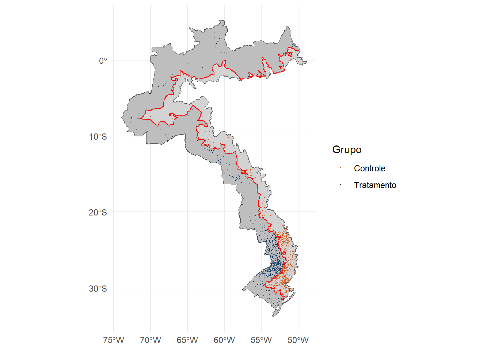

Enquanto minha dissertação de mestrado não é publicada do repositório da universidade, quero compartilhar alguns pensamentos sobre a metodologia que eu apliquei para analisar meu fenômeno de interesse. Para verificar diferenças nos indicadores de violência de ambos os lados da Faixa de Fronteira brasileira, realizei um design de regressão descontínua (RDD em inglês) e recentemente Lehner (2024) publicou uma nota em seu site pessoal onde discorre um pouco sobre ferramentas no R para trabalhar com esse modelo em aplicações espaciais.
Basicamente o RDD é aplicado quando temos um tratamento aplicado para as unidades apresentadas acima (ou abaixo) de um valor em uma variável contínua.
Origens e definição
O RDD é uma metodologia de análise causal amplamente utilizada em contextos não experimentais, nos quais a alocação de um tratamento ou intervenção depende de um ponto de corte claramente definido em uma variável contínua. Thistlethwaite and Campbell (1960) introduziram essa metodologia na avaliação do impacto de prêmios de mérito escolar no futuro acadêmico dos estudantes (aspirações de carreira, engajamento em cursos de pós-graduação, etc.). Esse estudo explorou o fato de que os prêmios eram atribuídos com base em uma determinada nota: estudantes cuja pontuação \(X\) atingisse ou excedesse um valor de corte \(c\) eram agraciados, enquanto aqueles com pontuação inferior não eram contemplados. Esse mecanismo gera uma descontinuidade no tratamento como função da nota. Seja a recepção do tratamento representada por \(D \in {0,1}\), temos então \(D=1\) se \(X\geq c\) e \(D=0\) se \(X<c\).
Analisando esse problema, não há razão para que a função que relaciona o futuro acadêmico (\(Y\)) e as notas (\(X\)) seja descontínua em qualquer ponto. Se uma descontinuidade for observada, a conclusão natural é que ela decorre da atribuição da intervenção no ponto de corte \(c\). Assumindo uma relação linear entre \(Y\) e \(X\), uma forma simples de estimar o efeito do tratamento pode ser expressa pela Equation 1. A intuição gráfica dessa relação está ilustrada na Figure 1.
Figure 1: Exemplo de descontinuidade. Fonte: Lee and Lemieux (2010)
Aplicando em dados espaciais
Apesar de amplamente utilizado para identificar efeitos causais em contextos observacionais, a aplicação do RDD em dados espaciais enfrenta desafios metodológicos significativos, especialmente na análise de fronteiras. Estudos como os de Keele and Titiunik (2015), Kaza (2018) e Jardim et al. (2024) destacam as dificuldades inerentes à aplicação do RDD em contextos geográficos e propõem adaptações para aprimorar sua eficácia.
Um dos primeiros trabalhos a explorar variações geográficas no RD foi Black (1999), que estimou a disposição a pagar por melhores escolas a partir da localização das residências dentro dos limites de determinados bairros.
Entretanto, a aplicação geográfica do RD apresenta desafios inerentes à natureza dos dados. Os autores enfatizam que a validade da inferência depende da forma como as unidades são distribuídas ao longo das fronteiras geográficas. Além disso, destacam que a sobreposição de múltiplas fronteiras institucionais pode dificultar a inferência causal, pois diferentes tratamentos podem estar operando simultaneamente.
O estudo de Zimmert and Zorn (2023), que investiga se os pagamentos diretos no setor agrícola afetam o emprego familiar nas fazendas suíças, com foco na participação da mão de obra feminina. O estudo examina como a descontinuidade espacial nas zonas agrícolas da Suíça impacta a alocação de trabalho nas fazendas.A estimação é realizada por Two-Stage Least Squares (TSLS), utilizando como variável instrumental a designação geográfica das zonas agrícolas.
Neste trabalho, pode ser verificado a abordagem tradicional para RD espaciais, que a aproxima dos modelos clássicos de RD: a variável de corte é a menor distância do ponto de interesse (no caso, as fazendas) para o polígono. A Figure 2 mostra um exemplo ilustrativo de como a variável é calculada

Figure 2: Exemplo de descontinuidade. Fonte: Zimmert and Zorn (2023)
(lehner?) argumenta que, apesar de essa ser a forma mais intiuitiva e largamente adotada de conduzir um RDD, a aplicação nas fronteiras do mundo real requer atenção. Por exemplo, cidades podem estar muito próximas da fronteira (low score), mas muito distantes entre si, o que prejudica a comparabilidade. Para assegurar o ajuste da comparação, é proposto primeiro dividir a fronteira em vários segmentos menores, \(\mathcal B = \cup\{\mathcal B_s \}^{S}_{s=1}\). Assim, para cada ponto \(\mathbf{x}_i\) é computada a distância euclidiana para o segmento mais próximo \(\text{argmin } d(\mathbf{x}_i, \mathcal{B}_s)\), resultando numa variável categórica que permite calcular efeitos fixos.
Lehner e o pacote spatialRDD
Para exemplificar o procedimento anterior, vou utilizar o tutorial disponibilizado na vignette do pacote e replicar nos dados que trabalhei de segurança pública na fronteira brasileira.
Primeiro vamos importar os dados geográficos das sedes dos municípios em torno da faixa de fronteira e classificá-los em tratamento e controle. Como eu já tinha feito o preprocessamento das bases no meu trabalho, vou só importar os arquivos.
t <-select(espaciais, id_municipio, groups)st_geometry(t) <-NULLpoints <- points |>right_join(t, by="id_municipio")rm(t)
Utilizando o geom_sf() pra construir a visualização. E sim, sou um grande partidário de utilizar paletas de cores de Pokémon com o Palettetown.
ggplot()+geom_sf(data = full, fill ="lightgray")+geom_sf(data = treated, , fill ="gray")+geom_sf(data = cut_off, color ="red")+geom_sf(data = points, mapping =aes(colour = groups), size =0.1) +scale_color_poke(pokemon ='charizard', spread =2, name ="Grupo", labels =c("Controle", "Tratamento"))+theme_minimal()

Aqui eu adiciono minha variável de interesse, que é a taxa municipal de homicídios em 2019. Além disso, crio uma variável da distância eucilidiana para o cutoff, conforme descrito na seção anterior.
violencia <-read_rds(file.path(dropbox, "municipal.rds")) |>filter(!is.na(id_municipio)) |>select(id_municipio, valor_2019)points <- points |>left_join(violencia)points$dist2cutoff <-as.numeric(sf::st_distance(points, cut_off))points$distrunning <- points$dist2cutoff# give the non-treated one's a negative scorepoints$distrunning[points$groups =="control"] <--1* points$distrunning[points$groups =="control"]
Aqui é o resultado dos estimadores OLS utilizando somente a variável dummy do tratamento e utilizando um RDD simples utilizando somente a distância unidimensional
list(lm(valor_2019 ~ groups, data = points)) |> stargazer::stargazer(type ="text")
summary(rdrobust(points$valor_2019, points$distrunning, c =0))
Sharp RD estimates using local polynomial regression.
Number of Obs. 1128
BW type mserd
Kernel Triangular
VCE method NN
Number of Obs. 540 588
Eff. Number of Obs. 196 116
Order est. (p) 1 1
Order bias (q) 2 2
BW est. (h) 31802.103 31802.103
BW bias (b) 63208.136 63208.136
rho (h/b) 0.503 0.503
Unique Obs. 540 588
=============================================================================
Method Coef. Std. Err. z P>|z| [ 95% C.I. ]
=============================================================================
Conventional -7.845 4.007 -1.958 0.050 [-15.700 , 0.009]
Robust - - -2.132 0.033 [-18.828 , -0.791]
=============================================================================
Agora, criamos a segmentação para adicionar efeitos fixos na análise. É comum escolher diversas segmentações para testar o ajuste da regressão, caso alguma das categorias fique subrepresentada, com poucas (ou nenhuma) observação em um dos lados do cutoff.
Essees são os resultados da estimação com efeitos fixos utilizando as segmentações.
library(lfe)#> Loading required package: Matrixlist(lfe::felm(valor_2019 ~ groups |factor(segment5) |0|0, data = points[points$dist2cutoff <3000, ]), lfe::felm(valor_2019 ~ groups |factor(segment10) |0|0, data = points[points$dist2cutoff <3000, ]), lfe::felm(valor_2019 ~ groups |factor(segment15) |0|0, data = points[points$dist2cutoff <3000, ])) %>% modelsummary::modelsummary(type ="text", stars = T)
tinytable_xoq8jxj3mcepdyv05i92
(1)
(2)
(3)
+ p < 0.1, * p < 0.05, ** p < 0.01, *** p < 0.001
groupstreatment
-15.762
-23.028+
-25.107+
(13.070)
(11.860)
(13.821)
Num.Obs.
23
23
23
R2
0.240
0.430
0.446
R2 Adj.
0.017
0.163
0.062
AIC
221.0
218.4
221.7
BIC
228.9
228.6
234.2
RMSE
21.76
18.85
18.59
Conclusão
O preprint de Alexander Lehner mostra algumas outras ferramentas para aplicão de RDD espacial, em particular Geographic Regression Discontinuity (GRD) (Keele and Titiunik (2015)), que tem uma variação bem sutil na segmentação dos pontos em relação ao cutoff. Mas o que gostaria de destacar desse trabalho fabuloso é como adicionar efeitos fixos ajuda a realizar a identificação correta do efeito do tratamento através da comparação correta entre as unidades analisadas. Na minha dissertação fiz isso de um modo um pouco diferente, espero poder compartilhar com mais detalhes no futuro, mas por hora fico feliz de revisitar esses dados sob uma perspectiva nova.
References
Black, Sandra E. 1999. “Do BetterSchoolsMatter? ParentalValuation of ElementaryEducation.”The Quarterly Journal of Economics 114 (2): 577–99. http://www.jstor.org/stable/2587017.
Jardim, Ekaterina, Mark C. Long, Robert Plotnick, Jacob Vigdor, and Emma Wiles. 2024. “Local Minimum Wage Laws, Boundary Discontinuity Methods, and Policy Spillovers.”Journal of Public Economics 234 (June): 105131. https://doi.org/10.1016/j.jpubeco.2024.105131.
Keele, Luke J., and Rocío Titiunik. 2015. “Geographic Boundaries as RegressionDiscontinuities.”Political Analysis 23 (1): 127–55. https://doi.org/10.1093/pan/mpu014.
Lee, David S, and Thomas Lemieux. 2010. “Regression DiscontinuityDesigns in Economics.”Journal of Economic Literature 48 (2): 281–355. https://doi.org/10.1257/jel.48.2.281.
Thistlethwaite, Donald L., and Donald T. Campbell. 1960. “Regression-Discontinuity Analysis: An Alternative to the Ex Post Facto Experiment.”Journal of Educational Psychology 51 (6): 309–17. https://doi.org/10.1037/h0044319.
Zimmert, Franziska, and Alexander Zorn. 2023. “Direct Payments and on-Farm Employment: Evidence from a Spatial Regression Discontinuity Design.”Q Open 3 (3): qoac024. https://doi.org/10.1093/qopen/qoac024.
Citation
BibTeX citation:
@online{batista2025,
author = {Batista, Victor},
title = {Notas Sobre {RDD}},
date = {2025-05-26},
url = {https://jvbatista1.github.io/posts/20250526_lehnerrdd/},
langid = {en}
}